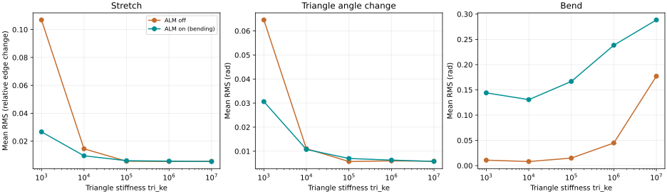

PINNED BAG RIGIDITY SWEEP · LOCAL COMPARISON
ALM off / ALM on
Five stiffnesses, identical initial models and prescribed motion. Each pair runs for 6 seconds: 1 second settling, then 5 seconds wiggling. Both use 10 substeps × 10 iterations per frame at 60 fps.
ALM affects bending only in this scene. Triangle membrane elasticity is not implemented in the current ALM branch. Both panels use the same triangle stretch/area model and contact algorithms. The missing May fixture was reconstructed from its archived parent scene and saved pin-motion notes; this is not an exact replay of the original scene file.
Left: ALM off. Right: ALM on (dihedral bending, rho scale 1.0, history retained). Fixed camera and synchronized playback. Each stiffness occupies 6 seconds of the 30-second video.
Deformation across the stiffness sweep
With the current ALM bending implementation, mean bend deformation increases at all five stiffnesses.
At tri_ke = 1e5, it rises from 0.0149 to 0.1667 rad
(11.2x), while mean stretch changes from 0.562%
to 0.602%. The high-stiffness stretch plateau remains.
These are geometric deformation metrics, not force residuals or convergence errors. Reduced stretch alone does not establish a better solution: changes in bending and contact can redistribute deformation.

| tri_ke | Stretch off % | Stretch on % | On/off | Bend off rad | Bend on rad | On/off |
|---|---|---|---|---|---|---|
| 1e+03 | 10.6892 | 2.6665 | 0.25x | 0.0108 | 0.1440 | 13.33x |
| 1e+04 | 1.4523 | 0.9525 | 0.66x | 0.0081 | 0.1306 | 16.17x |
| 1e+05 | 0.5619 | 0.6017 | 1.07x | 0.0149 | 0.1667 | 11.20x |
| 1e+06 | 0.5452 | 0.5691 | 1.04x | 0.0448 | 0.2384 | 5.32x |
| 1e+07 | 0.5574 | 0.5409 | 0.97x | 0.1770 | 0.2885 | 1.63x |
Arithmetic means over 361 samples, including the initial rest state and the final state at 6 seconds.
Settings and reconstruction
tri_ke = 1e3, 1e4, 1e5, 1e6, 1e7; tri_ka = 0.2 × tri_ke;
edge_ke = 200; triangle damping 0.1; bending damping 0.02; density 0.08; seed 42.
The 0.22 × 0.14 × 0.32 m box bag has resolution 18, 1657 vertices, 3240 triangles, 72 pinned rim vertices, and three rigid contents (bear mesh, cone, sphere). There is no ground or gripper. The rim moves along x with amplitude 0.07 m, frequency 0.85 Hz, and a 0.6-second linear ramp after the first second. Displacement and analytic velocity are sampled once per frame and applied before every substep.
The parent source is be3e604b4f77, with only its USD import moved into the loading function.
The wrapper removes the ground and omits the gripper, then applies the documented pins and schedule.
Solver source is 88e90dcb8f6d; no solver code was changed for this experiment.
Contact uses the existing self-contact/DAT and legacy rigid contact settings from the parent, identically in both modes.
There are no spring or tetrahedral elements in this model.
All 36,000 solver steps completed with finite saved positions. Paired model hashes match, pins stay within 1 micrometer of the prescribed locations, and ALM bending multipliers become nonzero. This is an equal-iteration comparison; no GPU speed claim is made.
Per-stiffness videos and raw data
| tri_ke | Video | Per-frame data | Settings / provenance |
|---|---|---|---|
| 1e+03 | Side-by-side MP4 | Off CSV · On CSV | Off metadata · On metadata |
| 1e+04 | Side-by-side MP4 | Off CSV · On CSV | Off metadata · On metadata |
| 1e+05 | Side-by-side MP4 | Off CSV · On CSV | Off metadata · On metadata |
| 1e+06 | Side-by-side MP4 | Off CSV · On CSV | Off metadata · On metadata |
| 1e+07 | Side-by-side MP4 | Off CSV · On CSV | Off metadata · On metadata |